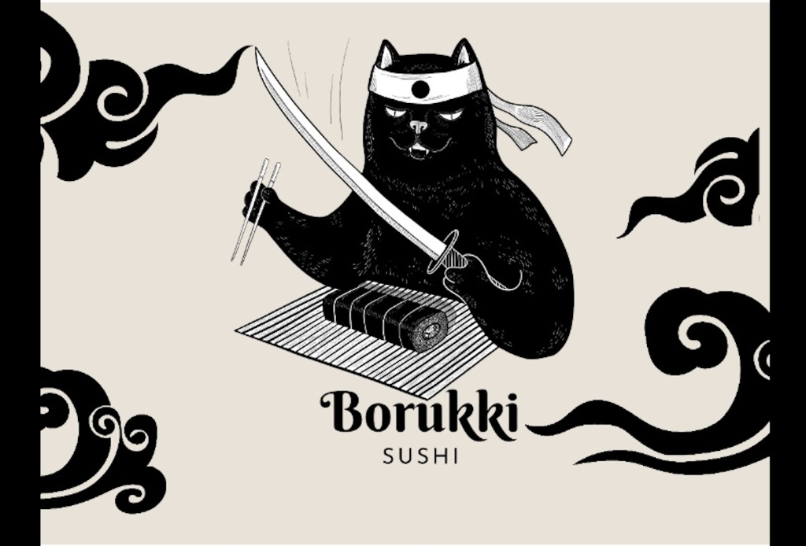
La Leyenda de Borukki
Cuentan en las calles de un Japón antiguo que existió un gato ronin, un samurái sin amo, llamado Borukki. Con una destreza inigualable con la katana y los palillos, recorrió el país perfeccionando el arte del sushi. No buscaba fama, solo el bocado perfecto. Hoy, su espíritu y sus recetas legendarias han cruzado el océano para encontrar un nuevo hogar en Barrio Italia, donde cada pieza cuenta la historia de su viaje.
Nuestro Menú
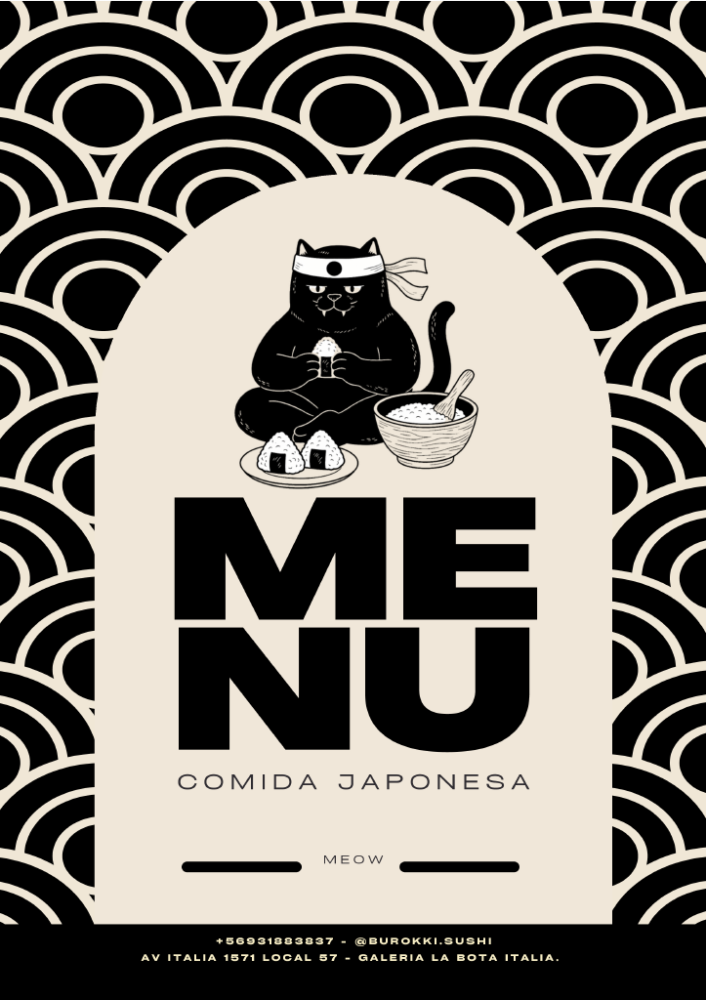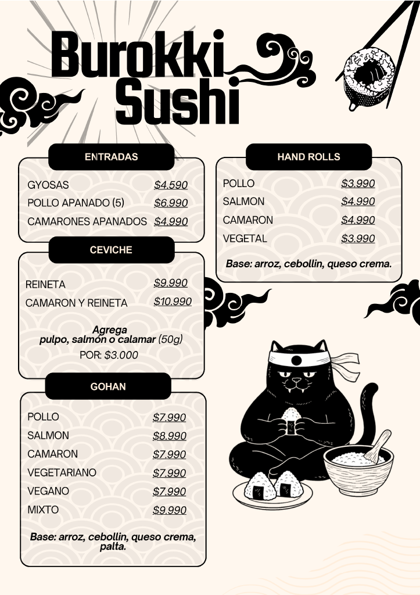 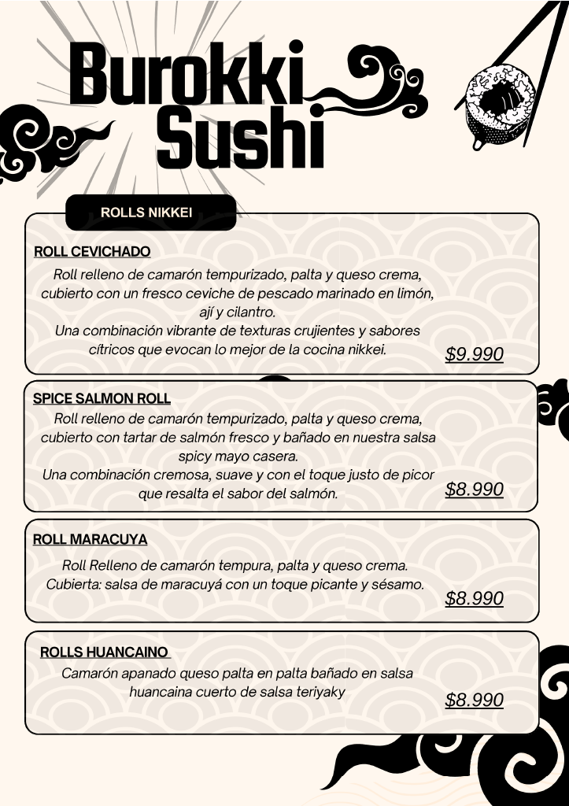
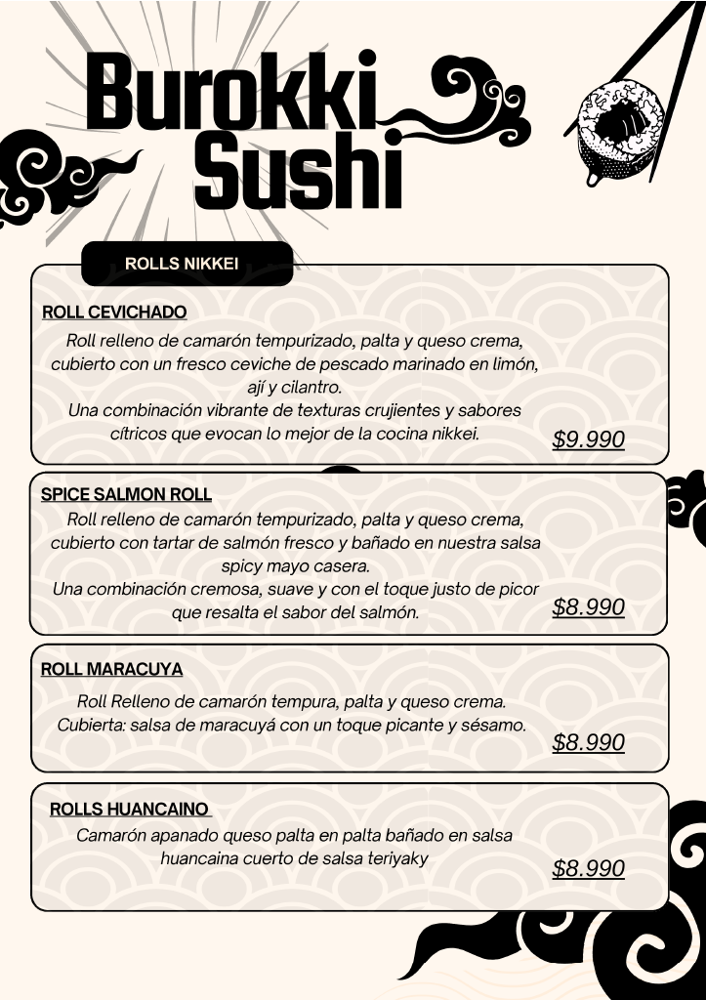

 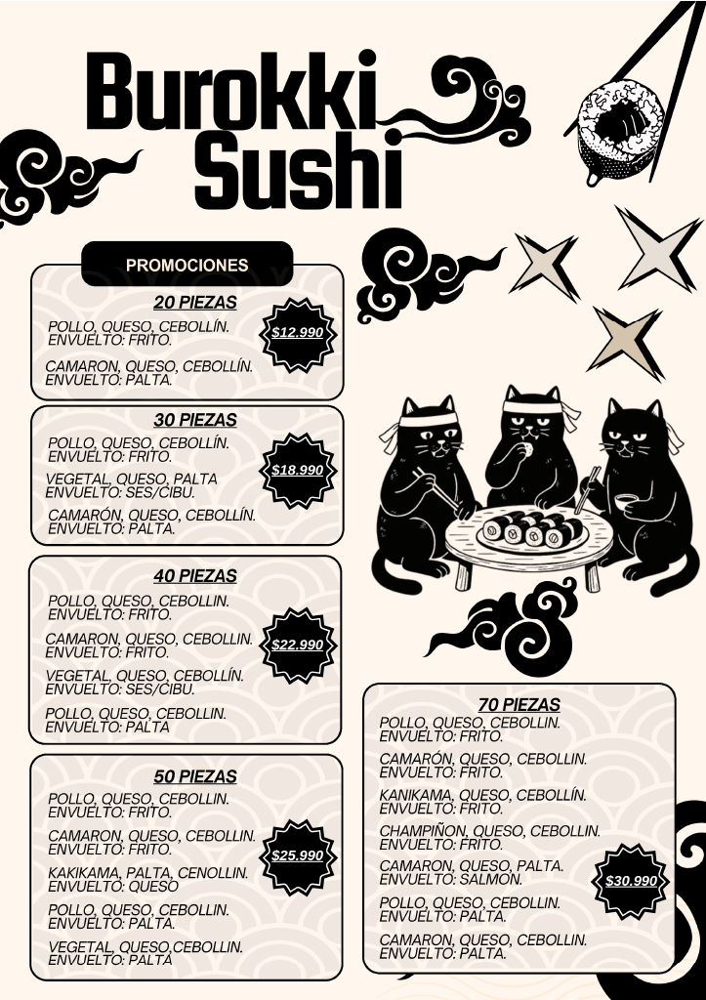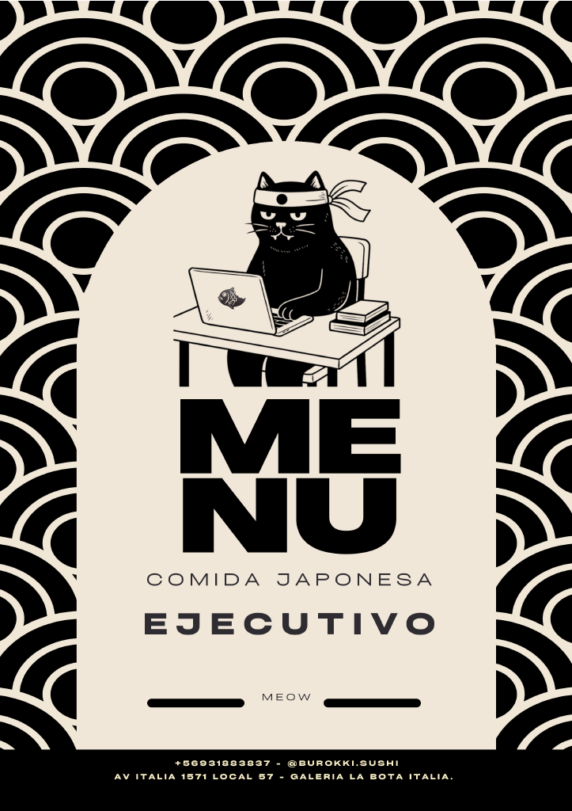
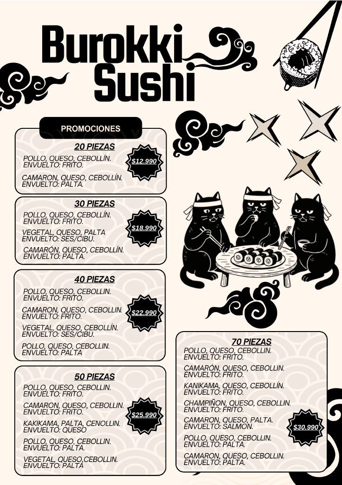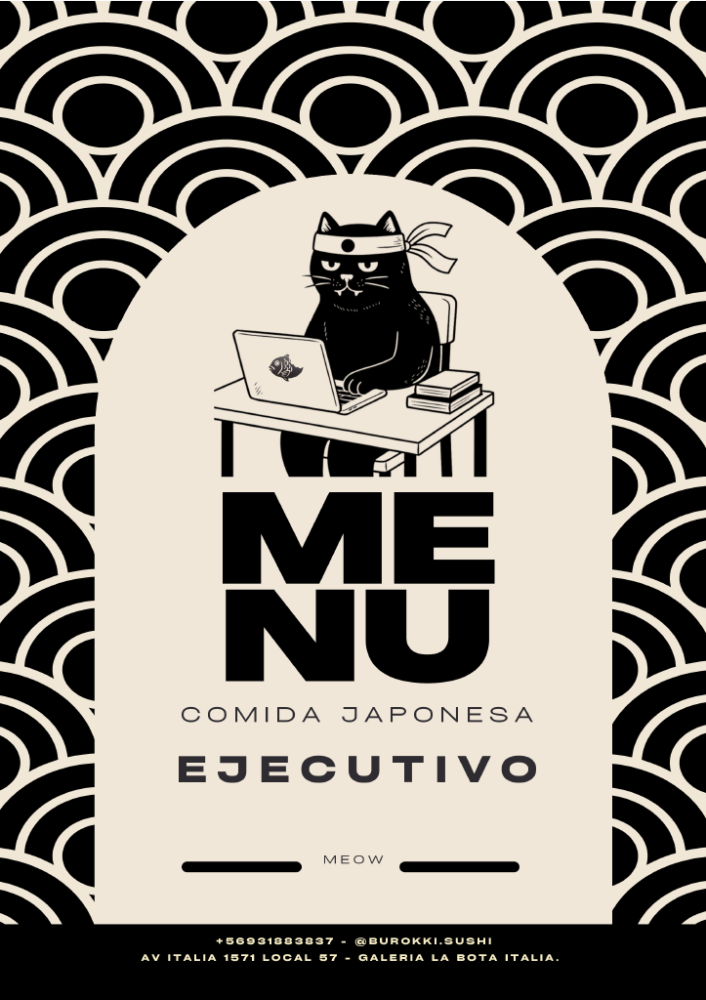
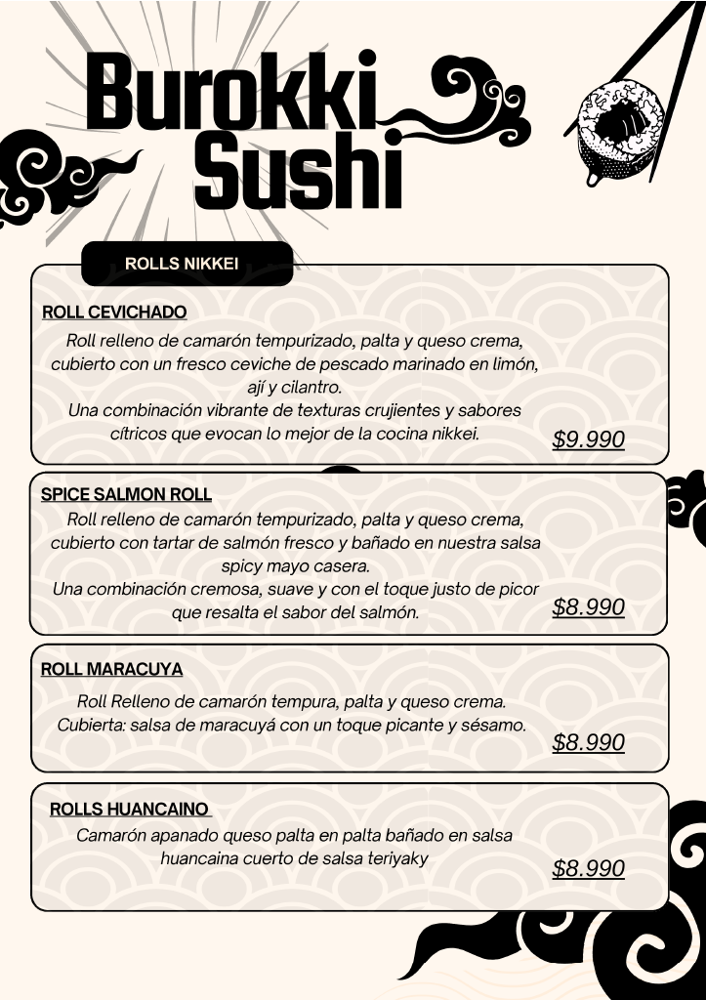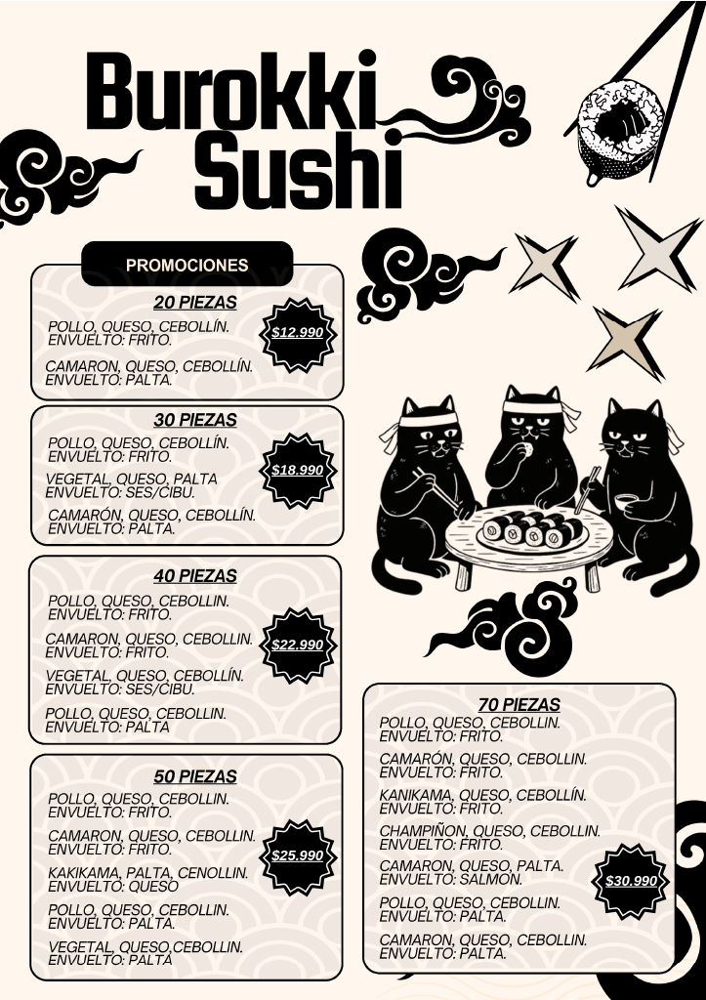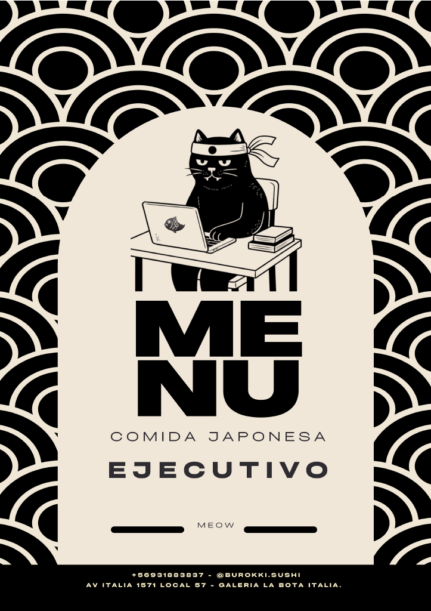